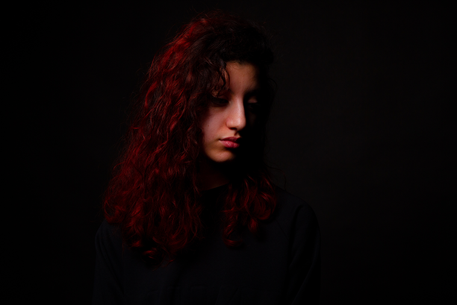
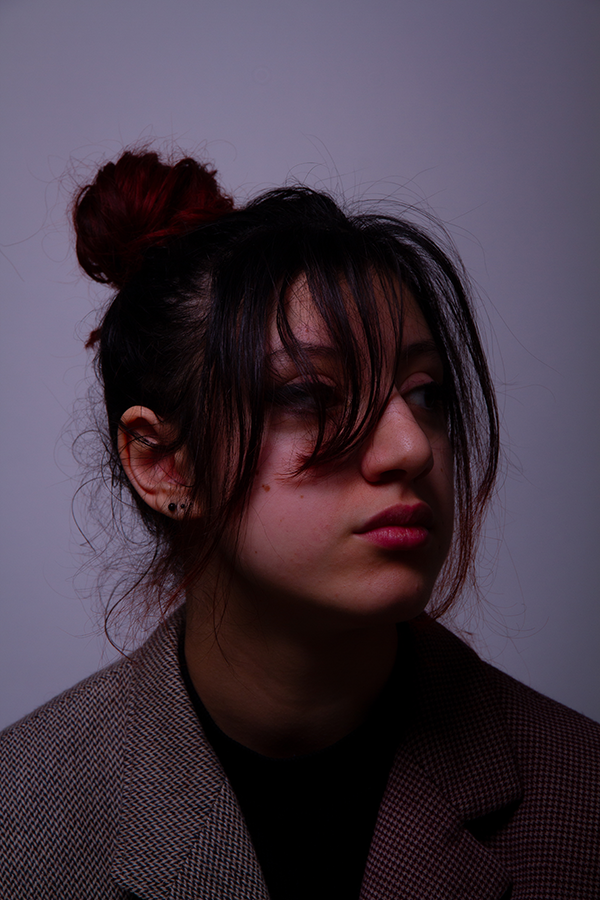
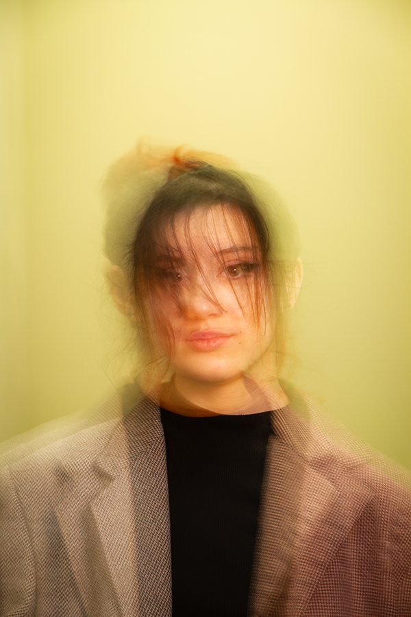

-
Série photographique avec une thématique sur les portraits. N’ayant auparavant jamais réalisé de portraits, cela m’a permis d’apprendre différentes techniques de mise en valeur. Lors de cet exercice, j’ai pu expérimenter ces techniques, j'ai donc joué avec le positionnement du flash, les ombres et la lumière, le flou, le mouvement…
(modèles : Nathan, Serena)
Date : 02/2023
Domaine : photographie - 
-

- 
- 
- précédent
- suivant